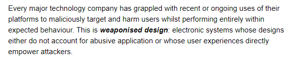
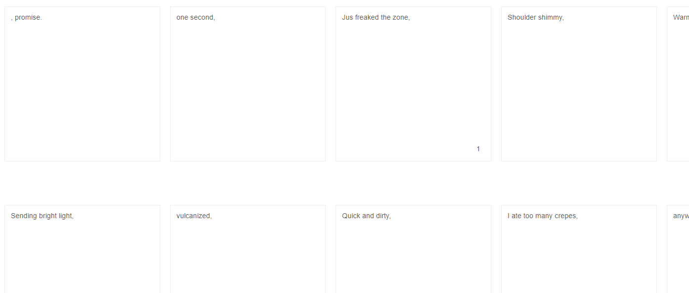

a return to posting (random things) - findings week of 2.8.2020
The past few months have been rather turbulent for me (got a job, quit, started another job, bought an apartment and moved in with my girlfriend, etc...). I haven't written very much recently, but I'm trying to get back to it now that things are settling down in life. anyway, here are some interesting / useful things I've found.
number one: on weaponised design.
this is a very interesting article, especially I think for software developers, on how the systems they design can become inherently harmful.
even if you're not a developer, it is an interesting read on how software continues to affect more and more of our everyday lives.
number two: arena: good sign-offs
a very cool collection of interesting email sign-offs, rangning from strange to amusing, from minimalist to maximalist, and everything in between.
highly useful and fun to read.
number three: a markdown tables generator.
I used this recently on a readme for a project I was working on. I like my readmes to look nice and fresh but I don't like manually writing out tables or using html tables, so this is pretty useful!
number four: music recognition tools.
if you ever have a clip of audio of unknown origin, then these two tools are for you! they've saved my ass a couple of times, but of course, for really, really tough problems that robots cannot solve, the hfse is always stronger (although often slower).
number five: chatsounds.
this isn't much more than a sizable source of random sounds. comes with a search function, as well! check it out.
I've been working on managing my time better these days, so now I will commit to writing at least one post of some kind every single week, no matter what. thank you for reading! feel free to reach out on twitter or discord or something. I always am interested in talking about whatever random stuff you find on the web, and of course web development related stuff. cheers!
currently listening to:
- 凶葬詩壱鳴り feat. ぜんぶ君のせいだ。 by ゆくえしれずつれづれ
- black cloud in the sky? by ada rook
- エレクトロサチュレイタ by tilt-six — original music video here
- 夜明けBrand New Days by ベイビーレイズJAPAN
- what u got by namasenda